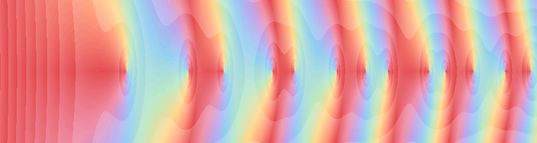
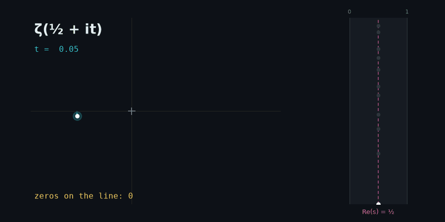
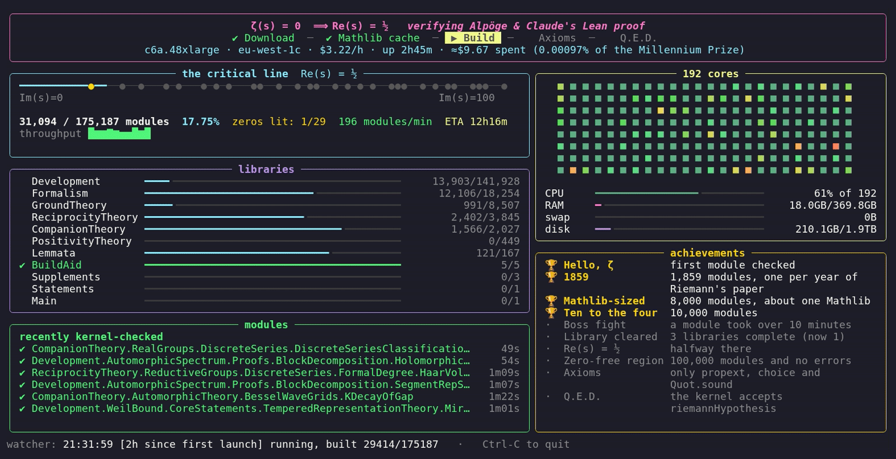

Riemann Hypothesis in Lean: an independent build
On 20 November 2026, Levent Alpöge announced a proof of the Riemann Hypothesis found together with Claude, along with a Lean 4 formalization. This page reports an independent build of that formalization on AWS: all 175,187 project modules compiled from source, and the main theorems use no axioms beyond Lean's standard three. Mathlib came from its prebuilt cache; the caveats describe the limits of this run. All logs, scripts and hashes are below, so you can check the claims against the evidence, or run the build yourself.

Summary
The archive from alpo.ge was checked against its published hash, built with lake build
(175,187 modules, 0 errors), and the five main theorems were checked with #print axioms.
Everything that was run passed. Checks that this run did not do are listed too, with pointers to others who have done them.
| Check | Result | Detail |
|---|---|---|
| Archive integrity | ✓ pass | sha256 of the merged lean.tar.gz matches 9631b4f0…49c7fc. Hashes of all 14 parts are under Downloads. |
| Full build | ✓ pass | All 175,187 modules built with 0 errors (460,321 warnings, mostly linter suggestions) in 21 h 19 m. build.log.gz |
| Axioms | ✓ pass | All five main theorems depend only on Lean's standard axioms (propext, Classical.choice, Quot.sound): no sorry, no added axioms.
axioms.log |
| Statement is Mathlib's | ✓ by inspection | riemannHypothesis proves Mathlib's own RiemannHypothesis, not a local definition.
Main.lean |
| Comparator check | – not run here | Done by the Lean community: leanprover-community/riemann-hypothesis. |
| Kernel replay with independent checkers | – not run here | Done by Andrew Sutherland: math.mit.edu/~drew/grh. |
| Human-readable write-up | … pending | The author describes the announcement as a rough timeline; a full write-up is still to come. |
What was verified
The five theorems in Main.lean:
theorem riemannHypothesis : RiemannHypothesis := rhOfAll
theorem riemannZeta_eq_zero_re : RiemannZetaZerosOnLine := rhOfAll
theorem LFunction_ne_zero_of_half_lt_re : DirichletLNonvanishingRightOfHalf := allChi
theorem LFunction_eq_zero_re : DirichletLZerosOnLine := claimAll.2.1
theorem LFunction_eq_zero_re_of_isPrimitive : PrimitiveDirichletLZerosOnLine := critAll1. The Riemann Hypothesis, as defined in Mathlib (Mathlib/NumberTheory/LSeries/RiemannZeta.lean):
def RiemannHypothesis : Prop :=
∀ (s : ℂ) (_ : riemannZeta s = 0) (_ : ¬∃ n : ℕ, s = -2 * (n + 1)) (_ : s ≠ 1), s.re = 1 / 22–5. The same for ζ and for Dirichlet L-functions, defined in the project's
Statements.lean:
def RiemannZetaZerosOnLine : Prop :=
∀ s : ℂ, riemannZeta s = 0 → (¬∃ n : ℕ, s = -2 * ((n : ℂ) + 1)) → s ≠ 1 → s.re = 1 / 2
def DirichletLNonvanishingRightOfHalf : Prop :=
∀ (N : ℕ) [NeZero N] (χ : DirichletCharacter ℂ N) (s : ℂ),
1 / 2 < s.re → (χ ≠ 1 ∨ s ≠ 1) → DirichletCharacter.LFunction χ s ≠ 0
def DirichletLZerosOnLine : Prop :=
∀ (N : ℕ) [NeZero N] (χ : DirichletCharacter ℂ N) (s : ℂ),
0 < s.re → s.re < 1 → DirichletCharacter.LFunction χ s = 0 → s.re = 1 / 2
def PrimitiveDirichletLZerosOnLine : Prop :=
∀ (N : ℕ) [NeZero N] (χ : DirichletCharacter ℂ N), χ.IsPrimitive →
∀ s : ℂ, 0 < s.re → s.re < 1 → DirichletCharacter.LFunction χ s = 0 → s.re = 1 / 2
Scope. "GRH" here means the Generalized Riemann Hypothesis for Dirichlet L-functions only,
not for L-functions of number fields or automorphic forms in general. Statements 2–5 use the project's own
definitions, which build on Mathlib's riemannZeta and DirichletCharacter.LFunction; statement 1 uses Mathlib's definition directly.
The axiom check (CheckAxioms.lean) and its output:
'riemannHypothesis' depends on axioms: [propext, Classical.choice, Quot.sound]
'riemannZeta_eq_zero_re' depends on axioms: [propext, Classical.choice, Quot.sound]
'LFunction_ne_zero_of_half_lt_re' depends on axioms: [propext, Classical.choice, Quot.sound]
'LFunction_eq_zero_re' depends on axioms: [propext, Classical.choice, Quot.sound]
'LFunction_eq_zero_re_of_isPrimitive' depends on axioms: [propext, Classical.choice, Quot.sound]How the proof works
This is a plain-language sketch, drawn from the top of the Lean code and from the announcement. The first two steps can be read straight off the code. The third follows the announcement, which the author describes as a rough timeline rather than a write-up, so treat it as a map, not an explanation. For a more detailed tour, see the guide to its architecture.

1. Only the right half needs checking. The zeros of ζ are mirror-symmetric about the line Re(s) = ½: a zero to the left of the line would have a twin to the right. So "every zero is on the line" is the same as "there are no zeros to the right of it". RhOfRight.lean proves this in about 60 lines from ζ's functional equation, which goes back to Riemann's 1859 paper (English translation) and is Mathlib's riemannZeta_one_sub (used here). CritLine.lean does the same for Dirichlet L-functions (Mathlib's DirichletCharacter.LFunction), using their functional equation completedLFunction_one_sub (used here). ζ is the simplest Dirichlet L-function, the character mod 1 (LFunction_modOne_eq), so the Riemann Hypothesis drops out as a special case of the generalized one (rh_of_every).
2. Everything else proves one statement. The remaining ~175,000 files prove EveryCharacter: no Dirichlet L-function has a zero with real part greater than ½. That is the Generalized Riemann Hypothesis, and it is where the new mathematics lives. The main theorems in Main.lean cover ζ, every Dirichlet L-function and the primitive ones, with the statements spelled out in Statements.lean.
3. The idea: borrow a trick from finite fields. The finite-field analogue of the Riemann Hypothesis is part of the Weil conjectures, proved by Weil for curves (see his 1949 paper) and by Deligne in general. Stepanov found an elementary proof for curves (see Bombieri's Bourbaki exposé and Schmidt's book). He builds an auxiliary polynomial that vanishes to high order at every point being counted, and that multiplicity forces the count to be close to its expected value. Whole numbers have no notion of vanishing to high order ("something like differentiating whole numbers", as the announcement puts it).
The new ingredient is to fake multiplicity with chains of theta lifts (see Howe and Rallis). These carry automorphic forms from one unitary group to a larger one, step by step. In Lean, a chain is the inductive IsIterLift, where each step integrates against a theta kernel. Each lift plays the role of one more order of vanishing. For a sum over primes up to X, weighted by the von Mangoldt function, the chain is about √X lifts long.
A positivity argument built on the Guinand–Weil explicit formula (Guinand 1948) then turns this into "no zeros to the right of ½". The explicit formula for Dirichlet characters appears in Lean as norm_psi0_add_zsum_le.
The full argument also uses:
- Iwasawa towers (Iwasawa 1959)
- Bost's slope inequality, from Arakelov theory (see Bost's Bourbaki exposé)
- a relative trace formula
- Bessel periods, from the Gan–Gross–Prasad conjecture (Gan, Gross and Prasad). In Lean, the Bessel period of a theta lift is computed in
besselPeriod_thetaLift_eq_integral_kernel, with seesaw identities such asseesaw_fubini_two_lifts_moderate_growth_kernels - a weakened form of Vandiver's conjecture
- Behrend sets (Behrend 1946), stated in Lean as
BehrendFreeandBehrendBound
Lean names don't map one-to-one onto these ideas, so Lean links are given only where a file clearly matches.
The build statistics reflect that structure. Of about 4,000 hours of summed module compile time, 58% went to abelian variety and CM theory (Development/AbelianVarietyTheory), 15% to automorphic arithmetic, including the theta correspondence (Development/AutomorphicArithmetic), and 8% to the automorphic spectrum (Development/AutomorphicSpectrum). The slowest single module, at 22 minutes, is a theta-correspondence file about Siegel–Eisenstein series (see also the Siegel–Weil formula and Weil 1965).
Build statistics
The build ran on a c6a.48xlarge spot instance (192 vCPU, 384 GiB) in eu-west-1 from
21 Nov 19:07 UTC to 22 Nov 16:26 UTC, with no spot interruptions during the build.
Summed module compile time was 4,009.2 hours, sampled memory peaked at 33.1 GB, and the build wrote
94.6 GB of .olean files. The metrics estimate $80.57 for spot compute and the data volume
through the 22 Nov 18:09 UTC snapshot, including setup and time after compilation. This is not a final AWS bill
and excludes root-volume charges and costs outside that recorded window.
Modules built over time
Where the compile time went
| Part of the library | Modules | Compile-hours | Share | |
|---|---|---|---|---|
| Development.AbelianVarietyTheory | 99,187 | 2,328.5 | 58.1% | |
| Development.AutomorphicArithmetic | 18,431 | 614.0 | 15.3% | |
| Development.AutomorphicSpectrum | 15,147 | 306.6 | 7.6% | |
| Development.WeilBound | 7,051 | 161.5 | 4.0% | |
| GroundTheory.HeightsAndTheta | 6,410 | 111.2 | 2.8% | |
| Formalism.LocalToGlobal | 5,501 | 97.6 | 2.4% | |
| Formalism.PeriodIntegrals | 4,350 | 68.3 | 1.7% | |
| Formalism.SharpRestriction | 3,093 | 50.4 | 1.3% | |
| ReciprocityTheory.ReductiveGroups | 2,799 | 43.0 | 1.1% | |
| Formalism.HermitianCurvature | 1,922 | 32.0 | 0.8% | |
| Everything else | 11,296 | 196.1 | 4.9% | |
| Total | 175,187 | 4,009.2 |
The slowest modules, all theta-correspondence or abelian-variety files:
| Module | Compile time |
|---|---|
| …ThetaPairLifts.ThirdPlaceSeries.SiegelEisensteinSecondTermHypotheses | 22 m 23 s |
| …ThetaCorrespondence.FockModels.EveryCharacterE | 17 m 15 s |
| …IwasawaDecomposition.ChartTiedLevelChain | 14 m 43 s |
| …InertiaEigenvalues.LanglandsQuotientOfSpehTypeProductIsL | 14 m 33 s |
| …DivisorProofs.OpenFirstParametersOfPrintsUEStatement | 13 m 59 s |
Per-module data for all 175,187 modules is in modules.csv.gz, and charts of CPU, memory, I/O and cost are in report.html.

aws/tui.py) that tracked the build.Downloads
Source archive
The formalization as published at alpo.ge: 14 parts that concatenate to lean.tar.gz
(239,275,554 bytes). Compare your downloads with these hashes.
| File | Bytes | sha256 |
|---|---|---|
| lean.tar.gz (merged) | 239,275,554 | 9631b4f020199e580ba86178cb56c6e9b09f690c2369a80dc4334aa93f49c7fc |
| lean.tar.gz.part01 | 18,000,000 | 86974b1c242ca7b6748f3299df4fc64ee0f6e06c776ac964fb64888101a3de77 |
| lean.tar.gz.part02 | 18,000,000 | 1c2a2477354a9dfa97ff1ce54861e96ed885bd456fffbaaabc2028314a229c42 |
| lean.tar.gz.part03 | 18,000,000 | 1465a23b1b579a881e24e5ffaf7c4c3727af28ea24741f1ec80e1d67947530a3 |
| lean.tar.gz.part04 | 18,000,000 | 3929e327eecb4e2c5c7cae30e104e6a4a52fa6b82d28325bcda8e9da1c86893b |
| lean.tar.gz.part05 | 18,000,000 | f25d7e80f7c4ad6d674aa18b323ca760f848857c8755501c149317c38a66c75d |
| lean.tar.gz.part06 | 18,000,000 | a8c651a68327811b37dce3cca8eda5e0b2102fa227c0d395cbb7553e4dd69939 |
| lean.tar.gz.part07 | 18,000,000 | 65c7e502a9b236a0f68d9e0aa6e089d4c09b9fc7a0960a149384063ccbe5e869 |
| lean.tar.gz.part08 | 18,000,000 | 71b027ad6e4179c3a50ce72921e3fec0a2dd751ec7472ac2c644ad145a50ec7e |
| lean.tar.gz.part09 | 18,000,000 | 47718977ebaa8613f1647e93134479780db9320c5fa911463fd312a6257b796f |
| lean.tar.gz.part10 | 18,000,000 | 1d85ece78e0779cec26b0cce29c6462d9f90180e56d78120b152df101715240b |
| lean.tar.gz.part11 | 18,000,000 | cf83a159d1a9540012229c376562587dd966da10cd657cbcef53acfd03232448 |
| lean.tar.gz.part12 | 18,000,000 | 1aa5415bd2db83b2689afeeb946419303b3c4f599ae790ad74d38465f768b502 |
| lean.tar.gz.part13 | 18,000,000 | 2de4edbce8ebdbfd0b94bc89bab518c7294209f408ec5b14a7be9e4832d9da81 |
| lean.tar.gz.part14 | 5,275,554 | 53f8ea43a9b5dcab97b84a52f3ac2848711c844a5420a4c56418093bacb3c6f6 |
Verification run
From the verification-2026-11-22 release. SHA256SUMS lists every file.
| File | Size | What it is | sha256 |
|---|---|---|---|
| STATUS | 3 B | final status written by verify.sh (ok) | dc51b8c96c2d745df3bd5590d990230a482fd247123599548e0632fdbf97fc22 |
| axioms.log | 435 B | #print axioms output | 2c7b168860c39a4b4afd417a327bbbd8a2a0615372655c5d4bd329fb06e7f3d5 |
| CheckAxioms.lean | 212 B | the axiom check | 22670ef4959d77534f6a1356ceff360cd16283160bb2d3b684214f7a904e99fb |
| verify.sh | 4.1 kB | the script that ran | 35db07bc238598c2c7b6004fad4ff061c23b61e9545151ff95f342c455757ede |
| build.log.gz | 13.4 MB | Lake build log: every module, compile time, warnings | cf4ba8f69feac42f90855b5a6d497cc7d6f22f935089e3e2cbae2d9ecc4d2151 |
| verify.out.gz | 13.4 MB | full output of verify.sh | aea7c81c3172d047eccc0b96b705ff19f042e1e0ee4a72e141f9ba4c7d1758cb |
| modules.csv.gz | 4.1 MB | one row per module: finish time, compile time, .olean size, warnings | 286656209c62d460ba4501909820d489ed759d4f58ff1f75964ea90d829cf1b0 |
| timeseries.csv | 23.8 kB | 5-minute buckets: modules, cores, memory, I/O, cost | 1fc5092e9c3b6cf698742e828fa989d6871a1ffa416d9c955262a0f6dc5d12c5 |
| report.html | 2.1 MB | charts and tables of the above | 749d8a697a9203001c6513362994cc289e9e9cc510c73607b6a421bd2cfeda19 |
| raw-metrics.tar.gz | 5.0 MB | sysstat history, CloudWatch metrics, spot prices, .olean listing | ea83b72552462d33339d7f2411dd74a375c0baf29bd512a830a3193c76598961 |
Check it yourself
Check the archive (about 240 MB, a few minutes):
git clone https://github.com/JGalego/riemann && cd riemann
./fetch_merge.sh # download, merge and unpack into ./lean
sha256sum download/lean.tar.gz # expect 9631b4f0…49c7fcBuild from scratch and check the axioms. This needs many cores and about 1.5 TB of disk; on 192 vCPUs it took 21 hours:
WORK=$HOME/riemann-work \
EXPECTED_SHA256=9631b4f020199e580ba86178cb56c6e9b09f690c2369a80dc4334aa93f49c7fc \
bash verify.sh # writes $WORK/STATUS, build.log, axioms.logOr run it on an EC2 spot instance that resumes after interruptions:
aws/launch.sh # launch (or resume) the instance
aws/watch.sh # relaunch after interruptions, fetch logs, clean up when done
python3 aws/tui.py # live dashboardSee the README for prerequisites and details.
Provenance
| Item | Value |
|---|---|
| Source archive | lean.tar.gz from alpo.ge, sha256 9631b4f020199e580ba86178cb56c6e9b09f690c2369a80dc4334aa93f49c7fc |
| Lean | 4.33.1, commit 819816b2e0a3bf405af45ae5c7af2491d8f5bee6 (x86_64-unknown-linux-gnu, Release) |
| Lake | 5.0.0-src+819816b |
| Mathlib | commit 0df444a360eaa60ab8c11dca51a86af692955474, prebuilt oleans from lake exe cache get |
| Machine | c6a.48xlarge (192 vCPU, 384 GiB), eu-west-1c, spot at $3.19–3.22/h |
| Build | 2026-11-21 19:07 UTC to 2026-11-22 16:26 UTC (76,763 s) |
| Axiom check | 2026-11-22 16:26:48 to 16:27:59 UTC |
| Output | 1.2 TB build directory, 94.6 GB of .olean files; 460,321 warnings, 0 errors |
| Script | verify.sh, sha256 35db07bc238598c2c7b6004fad4ff061c23b61e9545151ff95f342c455757ede |
Caveats
- Lean checks logic, not meaning. A clean build shows the proof is valid for the statements as written in Lean. Whether those statements say what we mean by "the Riemann Hypothesis" rests on Mathlib's definitions of
riemannZetaandRiemannHypothesis, which are widely used and reviewed. - This run trusts Lean's own kernel. The build uses the standard Lean 4 kernel only. Replaying the proof terms with independent checkers was done elsewhere (Sutherland), not here.
- Mathlib came from the cache. Mathlib's oleans were downloaded with
lake exe cache get, not rebuilt. The project's own 175,187 modules were all built from source. - The run had two instances. The archive hash was checked by verify.sh on a first instance, which then stopped on an open-file limit while fetching the Mathlib cache, and its log was lost with it. The build resumed from the same data volume on the instance whose logs are published here. The hash above was recomputed from a separate download.
- Warnings are not errors. The 460,321 warnings are mostly linter output ("Try this", unused tactics, overlapping instance parameters). None of them affects soundness, but they show the code was machine-generated and not cleaned up.
- Not peer reviewed. A formal proof this long (about 175,000 files) is not yet something a human can read. The author has said a proper write-up is still to come.
References
- Levent Alpöge, Remark (2026-11-20). The announcement, with links to the Lean archive.
- Lean and Mathlib communities, Lean verification of the Riemann Hypothesis (2026-11-21). Joint statement certifying the statement and the proof.
- Andrew Sutherland, RH Lean proof: verification files. Independent build, axiom checks and kernel replays; the model for this page.
- leanprover-community/riemann-hypothesis. The Comparator setup that checks the theorem against Mathlib's
RiemannHypothesis. - Kevin Buzzard, "…and the proof is checked in Lean". Criteria for trusting a Lean proof.
- A guide to its architecture. An 11-page map of the proof with links into the Lean archive.
- João Galego, Did Claude Prove the Riemann Hypothesis? Let's Ask a Spot Instance (AWS Builder Center). The story of this run.
More news, videos and discussion are collected in the README.